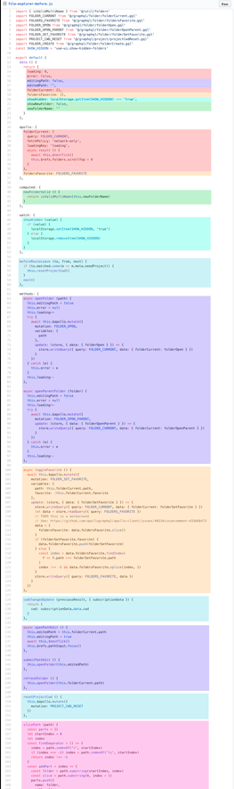

# [Vue] Vue3 即將正式上線，它解決了 Vue2 的什麼問題？又跟 React-hooks 有什麼關係？
# Vue3 的來臨對於 Vue 開發圈的影響，之於 React-hooks 的降臨改變 React 開發圈一般重大
Vue framework 即將迎來 3.0 大改版。
對比於 Vue 2 的版本，Vue 3 的的體積變得 更小 、執行速度變得 更快 、並且 加強了對 Typescript 的支持 以及 開放了更多的底層功能 ，使得開發者可以直接調用。
# 優勢
- 更快
- 捨棄了 Object.defineProperty 改為使用 ES6 的 Proxy 對基礎型別進行重新定義，大大提升了 Vue 的在 Javascript engine 的執行效率。
為何會如此說呢？
因為 Object.defineProperty 是在 Runtime 時期對 Object 增減 property 的。對於任一個 Language engine，動態計算 property 所需的費用都是昂貴的。
Proxy 不同於 Object.defineProperty 在於，其並未對原始對象進行改動，而是直接「代理」此對象，執行增加 / 減少的功能。這在 Javascript Engine 轉譯 Javascript 上，相較於前者的執行費用便小得多。
-
Virtual DOM 的重構。
-
更多編譯時的優化。
- 更好的 Typescript 支持 & 開放更多底層的 API。
我們都知道，過去 Vue2 對於 Typescript 並不友善，主要原因是 Vue 依靠 this export 所有的 property，然而造成的了許多麻煩。
其中一個明顯的問題是：”methods function 中的 this 指向 vue instance 而非 method ，造成 Typescript 類型推導上不小的成本。”
因此我們會發現，在 Vue2 的 Typescript 專案中，人們還需要另外通過 vue-class-component 這個 library 借助 Decorator 來達到類型推導。
在 Vue3 中，引進了 Composite-API ，更好地支持了 Typescript 的類型推導，並且還解決了 Vue2 時許多為人詬病的開發上的「問題」。
以下，我們就先來講講 Vue2 碰到了什麼樣的難題，Vue3 又是怎麼樣子解決了這些問題。
# Vue2 面臨的問題
我們時常聽到有人說
Vue 只適合拿來做小型的專案，並不適合大專案。
歸咎原因，主要有以下幾點：
1. Vue 並未對 Typescript 友善，不利於多人協作的大型專案。
專案開發大多仍為 Javascript。JS 鬆散靈活的語言特性使開發者在協同合作時信心不足，使得專案架構難以擴張規模。
2. Vue 的 this 綁定整個 Vue instance ，與傳統 Javascript Language 對 this 的詮釋並不一致。增加了程式開發人員對專案開發的心智成本。
眾所周知，在 Vue 中不論在哪個地方 (methods, computed, watch… etc) 當使用 this 時，都是指 vue instance 本身。然而，在 Javascript 中，function 本身有自己的 scope ， this 應該指向 function 本身 (或是 function 所屬的 class scope)，這種與 JS 原生概念不相同的概念，提升了了使用者的心智成本。
我們可以舉一個簡單的例子
請問在「右圖」中引入「左圖」的 columns.js
其中的 左圖的 this 指向何處？
左圖：columns.js ；右圖：其他的 component 引用了 column.js
第一張圖中的 this 會指向 vue instance，因此即使在 function 中並沒有定義 $t ，卻依然可以使用 $t 的功能。
這種利用 this 指向 vue instance 的作法雖然帶來了便利，但是在經驗不足的開法者面前，簡直就是一場災難。
3. 缺少簡潔且「低成本的機制」來提取、重用組件之間的邏輯。
Vue2 多採用 mixin 的方式提取組件中的共用部分，然而 mixin 本身隱式的依賴關係有礙於團隊的程式開發。
試想，你可能寫了一個帶有某個狀態的組件，且你的同事製作了一個讀取此狀態的 mixin 。
在某天你需要將組件的狀態重構到其他組件去，你們會記得應該要更新 mixin 嗎？若此 mixin 又被許多組件複用的話呢？
另外 mixin 也可能導致名稱的衝突。
若是你的組件中使用的名稱剛好與第三方中的 mixin 有衝突，你無法為其重新命名。相反的你只能尷尬地換一個名稱來避免衝突的發生。
因此在 React 中，使用了 HOC 與 Render Props 的方式取代了 mixin。
然而由於 Vue2 的 Options 特性，HOC 難以在 Vue2 中被借鑑。
4. Vue API 迫使使用者使用 Options 組織程式碼；但是許多時候，通過「邏輯」組織程式碼會更有助於程式的開發。
下方圖中相同顏色部分代表相關的程式碼，Vue2 的 Option 組織程式碼的方式使得開發人員時常需要在檔案的上下文之間滑動比對所需的邏輯。隨著程式碼的增加，開發與維護的成本就越來越高。

https://user-images.githubusercontent.com/499550/62783021-7ce24400-ba89-11e9-9dd3-36f4f6b1fae2.png
# Vue3 的解決辦法 — Composition-API
為了解決以上的種種問題，Vue3 借鑒了 React-hook 的精神，推出了 Composition-API (或稱 functional API)。
Composition-API 暴露了 Vue 更多更核心的 API 接口，讓使用者就像使用 react-hook 那樣，需要什麼 API ，再 import 就行。
並且，所有的 code 都寫在 setup( ) 中 。
以下使用一個小例子呈現 Vue3 的 Composition-API 使用方法。

左圖：使用 Options 方式組織程式邏輯；右圖：使用 Composition 方式組織邏輯
範例中，我們在 setup ( ) 中組織我們所有的邏輯，相比於將程式邏輯分散至 Options 的 properies 各處，我們可以更容易地閱讀程式、在程式的維護上也更加平易近人。
以下是官方文檔中附上的 Vue2 與 Vue3 的程式邏輯分佈的比較。左邊是使用 Vue2 的 Options API 開發的程式邏輯分佈；右邊則是 Vue3 的 Composition API 的邏輯分佈。
很明顯地我們可以看出，右邊的程式邏輯性比起左邊要更佳的緊密。
可以預見的是，開發者在閱讀與理解程式碼的舒適程度也一定是右邊大於左邊。
https://user-images.githubusercontent.com/499550/62783026-810e6180-ba89-11e9-8774-e7771c8095d6.png
# Compare to React-hooks
在 Vue3 發布後，網路上充斥著類似這樣的聲音
「這根本就是抄 React-hooks 的啊！, 我幹嘛不直接用 React 就好了？」
「雜七雜八的 code 都丟在 setup 中，看起來結構比 Vue2 更糟啊！」
「拜託不要再更新了！老子已經學不動了～」
然而，如果你是從文章一開始就讀到現在，應該已經能理解 Vue3 的改進是 勢在必行 ，且 不得不為 。
事實上，Vue3 中 Options Syntax 並未消失，你依然可以使用以前習慣的寫法繼續開發，也不是一定要在專案中使用 Composition-API。
另外，如果你有寫過 React-hooks，你可能真的跟我一樣會覺得寫起來跟 react hooks 很像。
但是 Vue3 的底層實作與 React Hooks 是大相逕庭的。
不同於 React-hooks 每一次的改動就需要 re-calculating 所有的 dependency value、 re-render 相對應的 components， Vue3 只在 created ( ) 之前執行一次 setup( ) function。
並且因為建基於 Vue 的「響應式系統」，寫在 setup ( ) function 內的邏輯 Vue 依然能夠追蹤得到。
Components 也僅需要 re-render 更新的部分，效能理論上會更勝 React-hooks。
其次從設計哲學方面來看，在 React-hooks 中簡化了原始 React-Class Component 的 life cycle。
對於從 React Class Component 入門的新手而言，無異於要學兩套 React 的 Render Logic。
然而 Vue3 在 life cycle 並未作大幅度更動，僅以額外提供另一種使用 API 的方法為主，無論是 Vue 的新手或是老手使用體驗並不會差異過大。
另外，關於「程式重用性」與「程式結構性」的疑問，事實上 Composition API 更能將程式寫得井然有序。
因為基於 Composition-API ，我們可以更容易地將相同邏輯的程式碼抽離出 Components，僅在需要的時候在引入。
舉一個追蹤游標位置的例子 (例子取自官網)
Composition-API 只依賴其參數以及 Vue3 的 API，而不依賴 this 。我們可以將組件內任何邏輯抽離出來進行複用，甚至導出整個 setup ，來達到 extends 的效果。
以下是 Component 如何利用 function 的作法:
如果這段邏輯使用 Vue2 的 Options API 來撰寫，試想一下該怎麼簡潔地寫出這樣的 Code 呢？(可能也只有 mixin 了吧…)
# 結論
Vue3 的改版無疑是在社群掀起了巨大的波瀾，當然評價也一定有褒有貶。
在我看完 RC 的 API Document 以及 Vue 的改版動機後，我對於這樣的改動是樂觀其成的。
事實上做為一個以 Vue 為主要前端開發項目的工程師而言，我也長期忍受著 Options API 種種在程式碼上「不便利」。
每每閱讀一個 Components 都需要畫面上下滾動，跳來跳去觀看參絞在一起的程式邏輯，無疑是一種痛苦。
我認為開發模式從 Class Components 轉變至 Functional Components 是一種演進上的必然。
前端程式的開發邏輯比起後端的 OOP，更多時候是以「事件驅動」一連串資料流到畫面的響應處理。此時使用 Functional Programming 的開發思維會更加地直覺且友好。
因此對於 Vue3 的改進，我個人是期待且樂觀其成的。
另外，這篇文章的撰寫我參閱了非常多的資料，以下的參考資料我個人認為非常有意義，有興趣也可以當作延伸閱讀，好好瀏覽一番。
# 參考資料
- ES6 文檔
- 2019 Vue Conf 尤大 Power Point
- 尤雨溪 Blog
- Vue3 究竟好在哪里？（和 React Hook 的详细对比）
- 初探 - Vue-3–0-Function-based-API
- Vue 組合式 API 蓋覽
- Vue 組合式 API 手冊
- vue/rfcs: Function-based Component API
- 为何在 React 中推荐使用 HOC，而不是 mixins 来实现组件复用。但在 Vue 中，很少有 HOC 的尝试？
- Mixins 被认为是有害的
- 從 React State Hooks 的閉包陷阱切入，淺談 hooks
- React State Hooks 的閉包陷阱，在使用 Hooks 前必須掌握